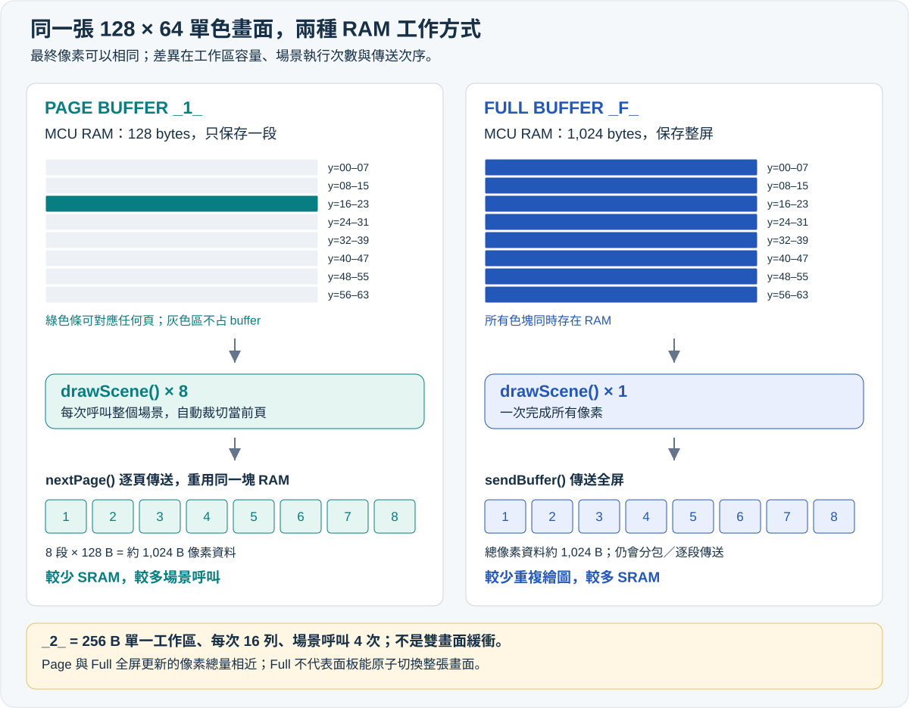
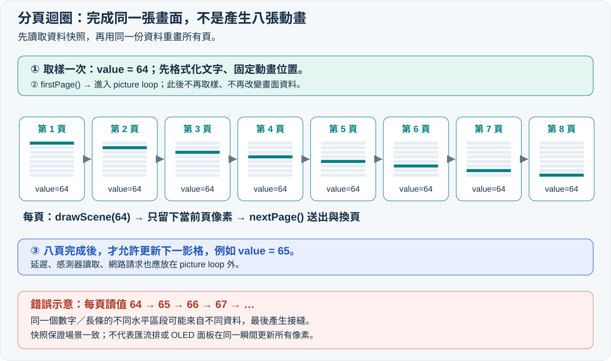
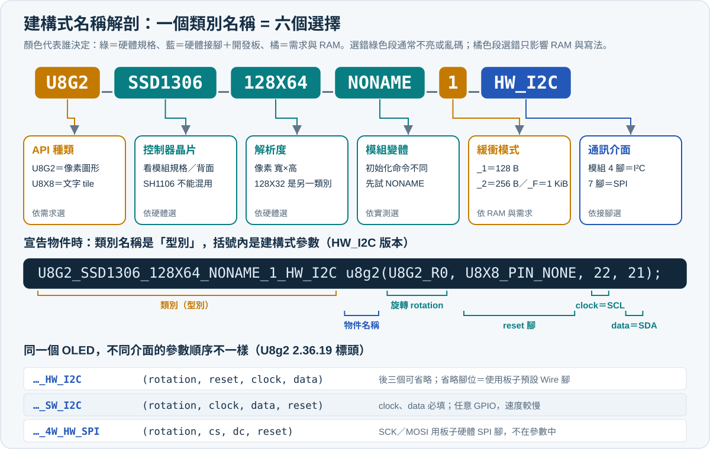
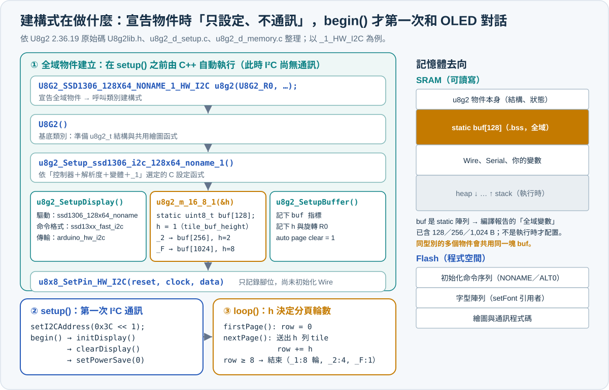
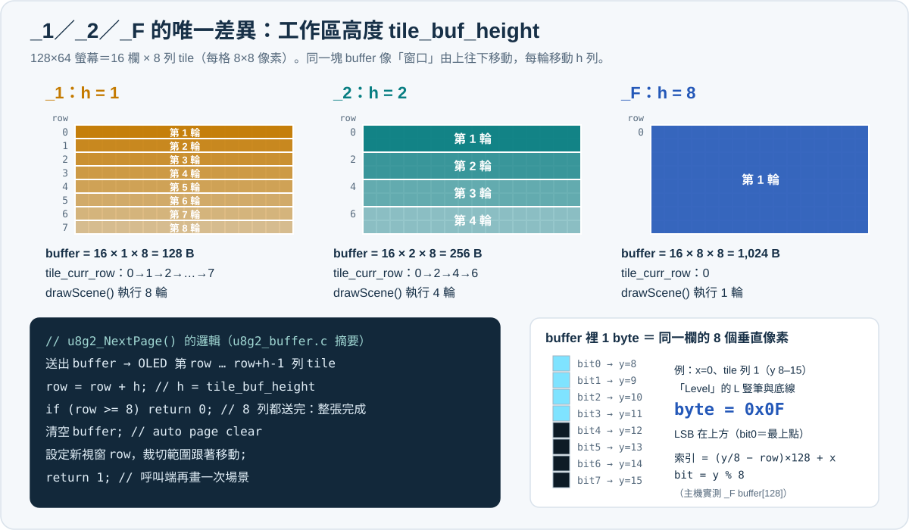
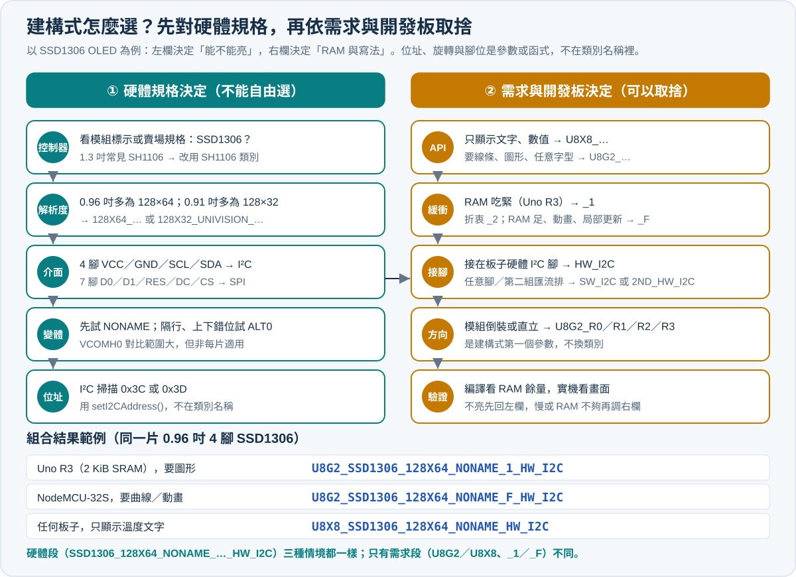
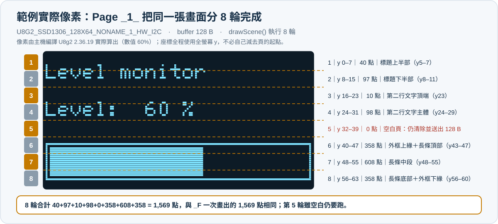
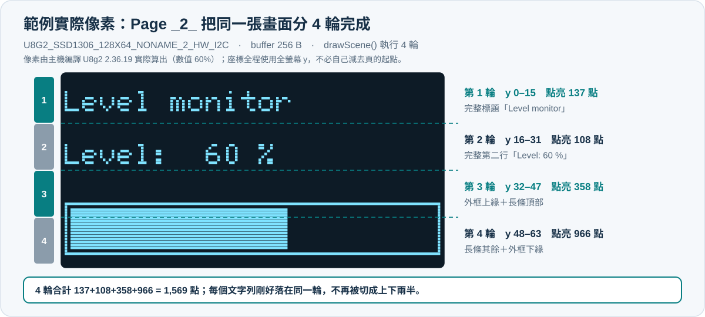
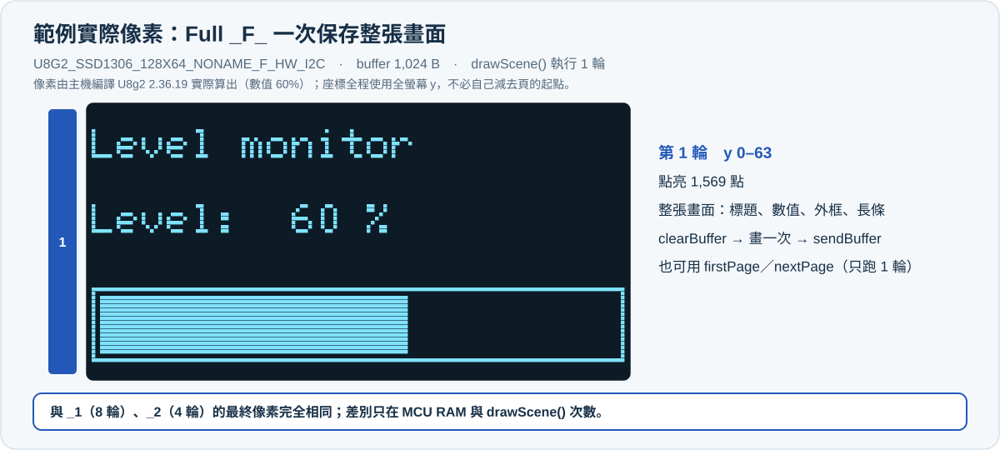
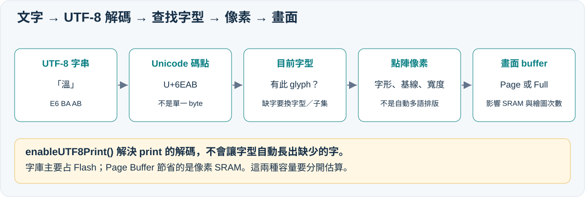

U8g2 顯示模式完整教學：U8x8、Page Buffer、Full Buffer 與開發板記憶體選擇
最後更新時間: 2026-10-27 18:20:00 (UTC+8)
使用模型: Claude Opus 5.5（前版：GPT-6）
執行 Agent: Claude Code（前版：Codex /root）
主題分類: ec／Arduino／OLED／嵌入式記憶體
HTML 筆記: 開啟互動版：記憶體試算、流程圖、複製程式碼與匯出 PDF
先掌握選擇原則：只顯示文字且 RAM 很少，選 U8x8；需要圖形且 RAM 吃緊，選 Page Buffer；RAM 足夠、希望程式簡單或需要動畫，優先考慮 Full Buffer。 對 Uno R3 的 2 KiB SRAM，128×64 OLED 的 1 KiB 完整緩衝區負擔很大；對 NodeMCU-32S，同樣的緩衝區通常很小。
本文以 SSD1306、128×64、單色、I²C、旋轉 U8G2_R0 為共同條件。容量表、頁數與圖解都以此條件說明；其他控制器以建構式和實際緩衝區大小為準。以下範例為教學原創，不依賴 DHT 感測器，先用時間產生穩定數值，讓螢幕測試能獨立完成。
目錄
- 核心概念：螢幕、程式庫與兩種 RAM
- 四種設定總比較
- 圖解 Page Buffer 與 Full Buffer
- 記憶體公式與容量預算
- 開發板適用性：Uno 到 NodeMCU-32S
- 安裝、接線與類別建構式（
_1／_2／_F解剖與選擇） - 範例 A：U8x8 文字顯示
- 範例 B：Page Buffer
_1_ - 範例 C：Page Buffer
_2_ - 範例 D：Full Buffer
_F_ - NodeMCU-32S 專用完整範例
- Font、符號與多語言顯示
- 資料快照、效能與進階應用
- 常見問題與實驗
- 官方資料與驗證範圍
一、核心概念：U8g2 在做什麼？
1.1 同一套程式庫的兩種介面
U8g2 主要服務單色圖形 LCD、OLED 與部分電子紙。它將「文字／圖形繪製」轉成控制器需要的資料，再透過 I²C、SPI 或平行介面送出。控制器、解析度、通訊方式、緩衝策略是不同的選擇維度；切換 page/full 並不會改變 OLED 的實體解析度。
- U8g2 圖形介面：支援像素座標、字型、線段、方框、圓形、點陣圖等；可搭配 page 或 full buffer。
- U8x8 文字／tile 介面：以 8×8 像素 tile 為基本定位單位，直接送到控制器，適合文字儀表板。也有
drawTile()等底層 tile 操作，但沒有 U8g2 那套任意像素圖形 API。
不是所有 U8g2 支援的控制器都能用 U8x8，選用前須確認其建構式存在。官方模式教學、U8x8 API
1.2 為什麼 OLED 有 RAM，開發板還要 buffer？
以 SSD1306 為例，螢幕控制器有自己的顯示 RAM，會持續依其中內容掃描面板；開發板端 buffer 則是 CPU 在傳送前組合像素的工作區。
CPU 畫圖 → 開發板 buffer → I²C 傳送 → 控制器顯示 RAM → 面板顯示。
page buffer 每次只準備一段像素，傳送後重用同一塊 RAM；full buffer 同時保留整張畫面；U8x8 則直接輸出字形／tile。控制器會保留已收到的像素，所以開發板不必同時存下整張畫面。U8g2 原始碼與說明
補充：為什麼不直接修改 OLED 裡的一個 pixel？ SSD1306 的顯示 RAM 每個 byte 對應同一欄的 8 個垂直像素。要保留其中 7 點、只修改另一點，通常需要先知道該 byte 的舊值；但其 I²C 介面主要提供命令／資料寫入，不能像一般 MCU RAM 隨意讀回 GDDRAM。U8g2 因而在 MCU 端組合一頁或一屏的像素，再送出完整 byte。這個限制說明的是保留未知舊像素的困難，不代表所有 SSD1306 實體介面都沒有讀取功能。SSD1306 原廠資料表 §8.1、§8.7
1.3 Flash、SRAM 與 PSRAM 要分清楚
| 記憶體 | 通常放什麼 | 和本題的關係 |
|---|---|---|
| Flash | 程式、字型、常數圖示 | 字型太大可能導致程式空間不足；不能直接當成可反覆改寫的畫面 RAM |
| SRAM | 畫面 buffer、物件、變數、堆疊與通訊資料 | 決定是否放得下 full buffer，也是本文主要比較對象 |
| 外部 PSRAM | 特定板款的大型動態資料 | 是否存在與如何配置取決於板子和核心；一般 U8g2 建構式不會自動把 buffer 搬到 PSRAM |
因此「板子有 4 MB」必須先問是 Flash 還是 RAM；「ESP32 有 520 KB SRAM」也不代表 sketch 可以取得 520 KB 的連續可用堆積。Arduino 官方記憶體指南、ESP32 資料表
二、四種設定總比較
下表的 RAM 只計像素緩衝區，不含 U8g2／U8x8 物件、Wire、變數與堆疊。U8x8 的「0 B」是沒有整頁／整屏像素 buffer，絕不是整個程式不使用 RAM。
| 比較項目 | U8x8 | Page _1_ |
Page _2_ |
Full _F_ |
|---|---|---|---|---|
| 128×64 像素 buffer | 0 B 的畫面 buffer | 128 B | 256 B | 1,024 B |
| 一次保存的畫面範圍 | 字形／tile 直接傳送 | 128×8 像素 | 128×16 像素 | 128×64 像素 |
| 一張畫面的繪圖函式執行次數 | 依更新的字元數 | 8 次 | 4 次 | 1 次 |
| 主要更新 API | drawString()／print() |
firstPage()／nextPage() |
同 _1_ |
clearBuffer()／sendBuffer() |
| 座標 | tile 欄、列 | 像素 x、y | 像素 x、y | 像素 x、y |
| 任意像素圖形 | 無 U8g2 圖形 API | 可以 | 可以 | 可以 |
| 任意比例字型／中文 | 受 U8x8 字型集與 tile 格限制 | 視所選 U8g2 字型 | 同左 | 同左 |
| MCU 保留整張舊畫面 | 否 | 否 | 否 | 是 |
| 只更新少數文字 | 很合適 | 標準 picture loop 仍重畫全場景 | 同左 | 可重畫整屏；進階可區域傳送 |
| 典型用途 | 數值、狀態、簡單文字選單 | 小 RAM 儀表與圖形選單 | RAM／繪圖運算折衷 | 動畫、曲線、較複雜 GUI |
_2_ 的「2」是兩個 tile rows 的單一工作區，不是一張顯示、一張繪製的雙畫面緩衝。_F_ 也只有一張完整 buffer，並非自動 double buffering。官方建構式與 buffer 定義
三、圖解：Page Buffer 和 Full Buffer 如何生成同一張畫面？
3.1 圖一：RAM 保存的範圍與傳送次序

圖一使用第八～十節範例的實際像素（以主機編譯 U8g2 2.36.19 算出），依三個區塊閱讀：
- ① RAM 長條（等比例）：每一格代表一列 tile，也就是 128×8 像素、128 B。
_1_只放得下 1 格，_2_放 2 格，_F_放全部 8 格。三種模式在記憶體上的差別只有這一點。 - ② 時間軸（由左到右）：每一欄上方的細條是這一輪 MCU buffer 實際存的像素，下方是這一輪送完後 OLED 的樣子。亮青色是已更新的列，暗色是尚未送到、仍是上一張畫面的列，彩色框是本輪 buffer 對應的位置。
- Page 模式每一輪都做同樣四件事：清除 buffer → 呼叫完整
drawScene()→ U8g2 只保留落在當前列的像素 →nextPage()送出。因此_1_第 1 輪只拿到標題的上半部（y5–7），第 2 輪才補上下半部（y8–11）。_2_每輪 16 列，標題可以整行落在同一輪。 - Full 模式只畫一次，但
sendBuffer()內部仍逐列送出 tile 列 0→7。 傳送進行到一半時，OLED 上半部已是新畫面，下半部仍是舊畫面；因此 full buffer 不等於整屏瞬間切換。
| 輪次 | _1_ buffer 對應 y |
_2_ buffer 對應 y |
_F_ buffer 對應 y |
本輪程式動作 |
|---|---|---|---|---|
| 1 | 0–7 | 0–15 | 0–63（唯一一輪） | 清除 → 完整 drawScene() → 送出 |
| 2 | 8–15 | 16–31 | — | 同上 |
| 3 | 16–23 | 32–47 | — | 同上 |
| 4 | 24–31 | 48–63（_2_ 最後一輪） |
— | 同上 |
| 5 | 32–39（本例全空白，仍照常清除與送出） | — | — | 同上 |
| 6–8 | 40–47、48–55、56–63 | — | — | 同上；第 8 輪 nextPage() 傳回 false |
| 每輪 buffer | 同一塊 128 B 重用 | 同一塊 256 B 重用 | 1,024 B 一次放滿 | — |
例如 drawScene() 中有文字、外框與長條圖，每一輪仍執行這三種繪圖命令，U8g2 自動只留下與當前列交集的像素。座標始終是全螢幕座標，不必自己把 y 減 8，也不必手動切割字型或圖案。
實測三種模式點亮的像素總數都是 1,569 點（_1_ 八輪相加、_2_ 四輪相加、_F_ 一次），證明分頁只是把同一張畫面分段完成，不會遺漏像素，也不會降低畫質。這套機制在原始碼層面怎麼由建構式決定，見 6.3 類別建構式解剖。
3.2 圖二：分頁迴圈不是動畫迴圈

firstPage() 到最後一次 nextPage() 是完成同一張畫面的多次繪製。每一輪不是新影格。如果把數值加一、讀感測器或 random() 放在繪圖函式內，頁與頁之間可能使用不同資料，造成數字上下部不一致、長條接縫或動畫物件斷裂。
正確做法是先取樣、整理文字、固定動畫位置，再開始 picture loop；等全部頁面完成後，才更新下一影格。這是資料快照，和控制器是否一次顯示完整影格是不同議題。官方 picture loop 限制
3.3 兩者最後的畫質是否不同？
相同字型、圖形、資料與控制器設定下，page/full 的最終像素可以完全相同。差異在 MCU RAM 和產生畫面的過程，並不是 page 只能顯示低畫質。
兩者也都會透過匯流排逐段更新控制器。sendBuffer() 不保證 OLED 在某一瞬間原子切換整張畫面；它通常不是與面板垂直同步的交換動作。不要把 full buffer 等同於「絕不撕裂、絕不閃爍」。
四、RAM 公式：從解析度算到整個專案
4.1 單色、8×8 tile 排列的估算
每個單色像素為 1 bit，8 pixels = 1 byte。令 W、H 為實體寬高，T=ceil(W/8) 為 tile 寬，R=ceil(H/8) 為 tile 高；對本文這類一般 tile 型配置：
- Full：
B_full = T × R × 8 bytes。寬高皆為 8 的倍數時，即W × H / 8。 - Page
_1_：B_page1 = T × 1 × 8 bytes。 - Page
_2_：B_page2 = T × 2 × 8 bytes。 - 場景執行次數：
N_page1 = R、N_page2 = ceil(R/2)、N_full = 1。
這是常見驅動配置的估算；部分控制器有特殊記憶體排列或 padding，且未必提供所有模式。請用建構式文件及實際 tile 寬高確認，不能把它當作所有螢幕的通則。一般 tile 配置可用 getBufferTileWidth() × getBufferTileHeight() × 8 取得目前像素工作區的 bytes；本機 2.36.19 的 getBufferSize() 只在特定動態配置條件下提供，不能當作預設 sketch 一定可用的成員。官方 buffer 配置原始碼
| 單色解析度 | _1_ buffer |
_2_ buffer |
_F_ buffer |
_1_／_2_ 場景次數 |
|---|---|---|---|---|
| 128×32 | 128 B | 256 B | 512 B | 4／2 |
| 128×64 | 128 B | 256 B | 1,024 B | 8／4 |
| 128×128 | 128 B | 256 B | 2,048 B | 16／8 |
| 256×64 | 256 B | 512 B | 2,048 B | 8／4 |
| 256×128 | 256 B | 512 B | 4,096 B | 16／8 |
上表是容量模型，不代表可任意替換本文 SSD1306 的解析度字串。例如 128×128 必須選真正支援該尺寸的控制器與建構式。
4.2 Uno R3 的量化比較
Uno R3 有 2,048 B SRAM。128×64 螢幕的 _1_、_2_、_F_ 分別吃掉 SRAM 的 6.25%、12.5%、50%。改用 _1_ 可比 _F_ 省下 896 B，對小型 AVR 是很大的差距。
假設「畫面以外的常駐資料加上預留執行空間」共需 1,200 B，則：
| 模式 | 預算總和 | 2,048 B 中尚餘 | 判讀 |
|---|---|---|---|
_1_ |
1,200 + 128 = 1,328 B | 720 B | 有較大餘裕 |
_2_ |
1,200 + 256 = 1,456 B | 592 B | 可以評估 |
_F_ |
1,200 + 1,024 = 2,224 B | 超出 176 B | 此假設下不可用 |
1,200 B 是教學假設，不是 U8g2 的固定消耗。 實際專案要計入物件、Wire、Serial、感測器、SD 卡、字串、巢狀函式與中斷。編譯器顯示的全域變數用量也不等於執行時最高用量；動態配置和堆疊仍須留空間。Arduino 官方記憶體指南
HTML 版另提供模式、解析度、板子與「其他 RAM 預算」的互動試算；結果為估算，不是硬體記憶體量測。
容量模型適用一般 8×8 tile 單色配置；不是控制器支援清單。其他 RAM 預算請自行填入。 灰色：其他 RAM 預算 綠色：像素 buffer 空白：名目剩餘（尚非實際量測） 方格為示意 tile；Page 工作區每步重用，灰色區未配置；Full 保留全屏。U8x8 示意一次更新一個 8×8 字元。ESP32 的名目 SRAM 包含系統用途，不能直接當成可用 heap。互動圖解：改變模式，看 RAM 與繪圖次數
MCU 像素工作區（等比例）
OLED 已傳送的區段
五、哪些開發板適合哪一種模式？
以下 SRAM 為名目容量，KiB=1,024 bytes；建議是依容量與常見用途的工程判斷，並非程式庫的硬性限制。只要控制器支援、資源足夠，小板也能使用 full，大板也能使用 page。
| 開發板／晶片 | 名目 SRAM | 128×64 _F_ 占比 |
建議與考量 |
|---|---|---|---|
| Uno R3／經典 Nano／Pro Mini，ATmega328P | 2 KiB | 50% | 文字用 U8x8；圖形優先 _1_，餘裕夠再試 _2_；簡單專案仍可用 _F_ |
| Leonardo／Micro，ATmega32U4 | 2.5 KiB | 40% | _1_／_2_ 較有餘裕；full 要連 USB 與其他資料一併預算 |
| Nano Every，ATmega4809 | 6 KiB | 16.7% | 一般小 OLED 可評估 full；整合大量周邊時可用 page |
| Mega 2560，ATmega2560 | 8 KiB | 12.5% | 小 OLED 常可用 full；多螢幕、大圖表仍須加總 |
| Uno R4 Minima／WiFi，RA4M1 | 32 KiB | 3.125% | 通常優先 full；WiFi 板的 ESP32 協處理器 RAM 不等同 RA4M1 sketch RAM |
| Zero，SAMD21 | 32 KiB | 3.125% | 通常優先 full |
| Due，SAM3X8E | 96 KiB | 約 1.04% | 小 OLED 通常優先 full |
| Pico／Pico W，RP2040 | 264 KiB | 約 0.38% | 可選 full；Arduino 範例需安裝對應 Arduino core |
| Pico 2／Pico 2 W，RP2350 | 520 KiB | 約 0.19% | 小 OLED 通常選 full |
| NodeMCU-32S，經典 ESP32 | 520 KiB 片上 SRAM | 約 0.19% 名目容量 | 128×64 建議先用 full；以實際 heap／系統用量評估整合專案 |
| ESP32-S3 開發板 | 512 KiB 片上 SRAM | 約 0.20% | full 常合適；PSRAM 是否存在取決於板款，不可套用 NodeMCU-32S 腳位 |
Arduino 容量依據：官方記憶體表、UNO R3／R4 官方比較、Nano 官方比較。其他容量：Raspberry Pi Pico 官方表、ESP32 資料表、ESP32-S3 官方規格。百分比為本文自行計算。
NodeMCU-32S 不是 ESP8266 的 NodeMCU，也不是 ESP32-S3。 經典 ESP32 的 520 KiB 包含系統和指令／資料用途；Wi-Fi、藍牙、RTOS、網路封包、TLS 等會占用資源。即使 full buffer 本身僅 1 KiB，也應觀察整個應用程式在最忙情況下的記憶體餘量。
5.1 補充開發板與 Flash 限制
| 板子／晶片 | RAM／Flash 重點 | 選型提醒 |
|---|---|---|
| ATtiny85／部分 Digispark 板 | 晶片 512 B SRAM、8 KiB Flash；bootloader 另占程式空間 | 128×64 full buffer 本身已超過 SRAM。優先試 U8x8；page 是否可用還要看精簡程式、字型和實際編譯結果，不能斷言「一律無法使用 U8g2」。I²C 支援依核心及軟體／USI 實作而定 |
| Blue Pill，STM32F103C8T6 | 20 KiB SRAM、規格 64 KiB Flash | full buffer 約占 5% SRAM；大型日文字庫可能先耗盡 Flash。不能以部分仿製板的額外 Flash 當作官方保證 |
| ESP8266 NodeMCU／D1 mini | 系統與 Wi-Fi 使用 RAM；可用 heap 依核心和程式而變 | 小 OLED 通常可用 full；不可保證總有 40／45 KiB 空閒。這不是 NodeMCU-32S，腳位別名也不同 |
依據：Microchip ATtiny85 資料表、ST STM32F103x8 資料表、Espressif ESP8266 模組記憶體說明。
選型應先算目前專案剩餘 RAM、解析度及需要的字型 Flash，不能只用「SRAM 大於 8 KiB 就一定 full」作固定門檻。SD 卡常見實作需要扇區快取，單一 512 B sector buffer 在 Uno 上已很明顯；但整個 SD 程式庫的 RAM 用量會隨實作改變。USB、Serial、Wire 的固定用量也不可跨核心套用同一數字。
六、安裝、接線與建構式
6.1 最小測試條件
- Arduino IDE 的 Library Manager 安裝 U8g2，作者 oliver／olikraus。
- 選擇正確開發板；NodeMCU-32S 使用 esp32 by Espressif Systems 核心中的 NodeMCU-32S。
- 確認模組是 SSD1306 而非 SH1106，並確認為 128×64、I²C 版本。
- 先單獨接 OLED，使用以下完整範例之一測試；每個程式區塊是獨立 sketch，不能全部貼到同一個檔案。
| OLED | Uno R3／經典 Nano | Mega 2560 | NodeMCU-32S |
|---|---|---|---|
| GND | GND | GND | GND |
| VCC | 依模組規格使用 3.3 V 或 5 V | 同左 | 本文使用支援 3.3 V 供電的模組，接 3V3 |
| SDA | A4／SDA | 20／SDA | GPIO21／P21 |
| SCL | A5／SCL | 21／SCL | GPIO22／P22 |
NodeMCU-32S 的 I/O 為 3.3 V 邏輯；I²C 的上拉電阻也必須拉到合適的 3.3 V，避免把匯流排拉到 5 V。排針的「第 21 腳」和 GPIO21 不同，請依板上絲印辨認。Espressif I²C 文件、NodeMCU-32S 官方 variant 腳位
6.2 看懂這個名稱
U8G2_SSD1306_128X64_NONAME_1_HW_I2C
| 片段 | 意義 |
|---|---|
| U8G2 | 使用圖形 API |
| SSD1306 | 螢幕控制器 |
| 128X64 | 模組解析度 |
| NONAME | 驅動／模組變體名稱，不表示可忽略硬體差異 |
| 1／2／F | 分頁一列／分頁兩列／完整畫面 buffer |
| HW_I2C | 使用硬體 I²C／Arduino Wire |
SW_I2C 是軟體 I²C，4W_HW_SPI 是硬體四線 SPI；它們不決定 page/full。範例用 U8X8_PIN_NONE 表示模組沒有連接可控制的 reset 腳；若實物有 reset 接線，改填對應 GPIO。官方建構式參考
I²C 掃描器常報 7-bit 位址 0x3C／0x3D；U8g2 的 setI2CAddress() 則要傳入左移一位的值，例如 0x3C << 1，並在 begin() 前設定。以下範例明確使用 0x3C；若掃描結果不同，須修改。官方 U8x8 位址 API
6.3 類別建構式解剖：_1、_2、_F 在 C++ 裡做了什麼？
6.3.1 核心概念：類別、物件與建構式
U8G2_SSD1306_128X64_NONAME_1_HW_I2C 不是函式，而是 U8g2lib.h 定義的 C++ 類別（class）；u8g2 是用這個類別建立的物件；括號內的值交給該類別的建構式（constructor）。U8g2 為每一種「控制器＋解析度＋變體＋緩衝模式＋介面」組合各寫一個類別，全部繼承共用的 U8G2 基底類別，因此 drawStr()、firstPage()、sendBuffer() 在每個類別中的寫法都相同。

| 寫法片段 | C++ 角色 | 本文範例的意思 |
|---|---|---|
U8G2_SSD1306_128X64_NONAME_1_HW_I2C |
類別（型別） | 決定驅動程式、初始化命令、buffer 大小與傳輸方式 |
u8g2 |
物件名稱，可自取 | 之後以 u8g2.begin()、u8g2.drawStr() 呼叫 |
U8G2_R0 |
建構式第 1 參數：旋轉 | R0、R1（90°）、R2（180°）、R3（270°）、U8G2_MIRROR |
U8X8_PIN_NONE |
HW_I2C 第 2 參數：reset 腳 | 模組沒有 RES 腳，或 RES 不接 MCU |
22, 21 |
HW_I2C 第 3、4 參數：clock、data | 只有 ESP8266／ESP32 核心會用來呼叫 Wire.begin(data, clock)；其他核心忽略，固定用板子的預設 I²C 腳 |
參數順序依介面而不同：HW_I2C 是 (rotation, reset, clock, data)，SW_I2C 是 (rotation, clock, data, reset)，4W_HW_SPI 是 (rotation, cs, dc, reset)。從 HW 改成 SW 時，不能只改類別名稱而沿用原本的參數。以上依本機 U8g2 2.36.19 U8g2lib.h 與 U8x8lib.cpp 查核。
6.3.2 建構式內部：只設定、不通訊

流程圖：
下面是程式庫原始碼的摘錄與註解（不是要貼進 sketch 的程式），可看出 _1／_2／_F 三個類別只差在呼叫哪一個設定函式：
// U8g2lib.h（2.36.19）摘錄：_1 版本的類別定義
class U8G2_SSD1306_128X64_NONAME_1_HW_I2C : public U8G2 {
public: U8G2_SSD1306_128X64_NONAME_1_HW_I2C(const u8g2_cb_t *rotation,
uint8_t reset = U8X8_PIN_NONE, uint8_t clock = U8X8_PIN_NONE,
uint8_t data = U8X8_PIN_NONE) : U8G2() {
// 依控制器＋解析度＋變體＋緩衝模式選定的 C 設定函式；_2、_F 版只差最後的 _2／_f。
u8g2_Setup_ssd1306_i2c_128x64_noname_1(&u8g2, rotation,
u8x8_byte_arduino_hw_i2c, u8x8_gpio_and_delay_arduino);
// 只把腳位寫進物件；真正的 Wire.begin() 在 begin() 時才執行。
u8x8_SetPin_HW_I2C(getU8x8(), reset, clock, data);
}
};
// u8g2_d_memory.c 摘錄：buffer 是函式內的 static 陣列，程式啟動時就存在。
uint8_t *u8g2_m_16_8_1(uint8_t *page_cnt) {
static uint8_t buf[128]; // 16 tile 寬 × 1 tile 高 × 8 B
*page_cnt = 1; // tile_buf_height：一次保存 1 列 tile
return buf;
}
// u8g2_m_16_8_2：static buf[256]，page_cnt = 2
// u8g2_m_16_8_f：static buf[1024]，page_cnt = 8
6.3.3 _1／_2／_F 的唯一差異：tile_buf_height
| 項目 | _1 |
_2 |
_F |
|---|---|---|---|
| 建構式呼叫的設定函式 | …_noname_1() |
…_noname_2() |
…_noname_f() |
| 記憶體函式與 static 陣列 | u8g2_m_16_8_1 → buf[128] |
u8g2_m_16_8_2 → buf[256] |
u8g2_m_16_8_f → buf[1024] |
getBufferTileHeight()（h） |
1 | 2 | 8 |
nextPage() 每次 row 增加 |
1 | 2 | 8 |
| picture loop 輪數 | 8 | 4 | 1 |
| 可用的更新寫法 | firstPage()／nextPage() |
同左 | clearBuffer()／sendBuffer()，或 picture loop（只跑 1 輪） |

從原始碼推得的四個重要結論：
- 建構式不碰硬體。 全域物件在
setup()之前建立，此時只記錄驅動、buffer 與腳位；Serial尚未啟動、I²C 也還沒通訊。所以setI2CAddress()、setBusClock()要寫在begin()之前，硬體初始化由begin()完成（initDisplay()→clearDisplay()→setPowerSave(0)）。 - buffer 是 static 陣列。 它在編譯時就占用 SRAM，所以 Arduino IDE 編譯報告的「全域變數使用」已包含 128／256／1,024 B；不是執行時才配置。同型別的兩個物件會共用同一個陣列（見 13.5）。
nextPage()的演算法只用到 h。 送出目前 h 列 tile →row += h→row ≥ 8就結束，否則清空 buffer 並把裁切視窗移到新的 row。同一份 picture loop 程式碼在_1、_2、_F都能正確執行，只是輪數不同。- 反方向不成立。
_1／_2搭配clearBuffer()／sendBuffer()時，sendBuffer()只會把 buffer 的 h 列送到 row 0，結果只更新最上面 8／16 列。
6.3.4 實作：用同一支程式驗證三種建構式
只修改建構式的 _1_／_2_／_F_，從序列埠讀出 tile 配置與實際的 picture loop 輪數，用來確認上面的表格。
流程圖：
#include <Arduino.h>
#include <Wire.h>
#include <U8g2lib.h>
// 只改這一行的 _1_／_2_／_F_；其餘程式不必修改。
U8G2_SSD1306_128X64_NONAME_2_HW_I2C u8g2(U8G2_R0, U8X8_PIN_NONE);
void setup() {
Serial.begin(115200);
u8g2.setI2CAddress(0x3C << 1); // 位址須在 begin() 前設定。
u8g2.begin(); // 第一次 I2C 通訊發生在這裡。
u8g2.setFont(u8g2_font_6x12_tr);
const uint8_t tileW = u8g2.getBufferTileWidth(); // 128 / 8 = 16
const uint8_t tileH = u8g2.getBufferTileHeight(); // _1=1、_2=2、_F=8
Serial.print("tile buffer: ");
Serial.print(tileW);
Serial.print(" x ");
Serial.println(tileH);
Serial.print("buffer bytes: ");
Serial.println((uint16_t)tileW * tileH * 8U); // 128／256／1024
uint8_t passes = 0; // 計算同一張畫面重畫幾輪。
u8g2.firstPage();
do {
passes++;
u8g2.drawStr(0, 12, "constructor test");
u8g2.drawFrame(0, 20, 128, 40); // 跨越多列 tile 的方框。
} while (u8g2.nextPage());
Serial.print("picture loop passes: ");
Serial.println(passes); // _1=8、_2=4、_F=1
}
void loop() {
// 本例只在開機時驗證一次。
}
| 建構式 | 預期序列埠輸出 |
|---|---|
…_1_HW_I2C |
tile buffer: 16 x 1、buffer bytes: 128、picture loop passes: 8 |
…_2_HW_I2C |
tile buffer: 16 x 2、buffer bytes: 256、picture loop passes: 4 |
…_F_HW_I2C |
tile buffer: 16 x 8、buffer bytes: 1024、picture loop passes: 1 |
預期值已用主機編譯 U8g2 2.36.19 的 C 程式庫實際執行同樣的分頁迴圈得到；Arduino 實機輸出仍以你的板子為準。也可以把三個版本分別編譯，比較 IDE 顯示的「全域變數」差值：理論上 _1→_2 增加 128 B、_2→_F 增加 768 B。
6.4 建構式怎麼選？硬體規格與需求各管哪一段
結論：兩者都要看，而且有先後順序。 類別名稱的前段（控制器、解析度、變體、介面）由硬體規格決定，選錯通常不亮、亂碼或畫面錯位；後段的 U8G2／U8X8 與 _1／_2／_F 由需求與開發板 RAM 決定，選錯只會造成 RAM 不足或程式寫法不符。I²C 位址、旋轉、腳位則是參數或函式，不在類別名稱中。

| 名稱片段 | 由誰決定 | 如何確認 | 選錯的現象 |
|---|---|---|---|
SSD1306／SH1106 |
硬體：控制器晶片 | 模組背面標示、賣場規格；0.96 吋多為 SSD1306，1.3 吋常見 SH1106，但以標示為準 | 畫面偏移 2 像素、右側出現雜點或亂碼 |
128X64／128X32_UNIVISION… |
硬體：解析度 | 模組規格 | 只顯示一半、上下拉伸 |
NONAME／ALT0／VCOMH0 |
硬體：模組變體（初始化命令） | 先用 NONAME；隔行顯示或上下錯位改試 ALT0（COM 腳配置 0xDA 由 0x12 改為 0x02）；VCOMH0 對比範圍較大，但原始碼註明並非每片都適用 |
隔行、亮度或對比異常 |
HW_I2C／SW_I2C／4W_HW_SPI |
硬體接腳＋接線 | 4 腳（VCC、GND、SCL、SDA）是 I²C；7 腳（D0、D1、RES、DC、CS）是 SPI；接在板子硬體 I²C 腳用 HW_I2C，任意腳用 SW_I2C |
完全無回應 |
U8G2／U8X8 |
需求 | 只顯示文字數值選 U8X8；要圖形、任意字型選 U8G2 |
沒有需要的 API |
_1／_2／_F |
需求＋開發板 RAM | 依第四、五節的 RAM 預算 | RAM 不足、重啟；或寫法不符而只更新部分畫面 |
以同一片 0.96 吋 4 腳 SSD1306 為例：Uno R3 要畫圖形選 U8G2_SSD1306_128X64_NONAME_1_HW_I2C；NodeMCU-32S 要曲線或動畫選 …_F_HW_I2C；任何板子只顯示溫度文字可選 U8X8_SSD1306_128X64_NONAME_HW_I2C。三者的硬體段完全相同，只有需求段不同。
NONAME、ALT0、VCOMH0 的差異依本機 u8x8_d_ssd1306_128x64_noname.c 的初始化序列查核。若畫面不亮，先回頭檢查硬體段與位址；能亮但 RAM 不足或速度不夠，再調整需求段。
七、範例 A：U8x8，文字狀態板
用途： 只顯示溫度、狀態或計數。128×64 使用 8×8 字型時可排 16 欄×8 列，drawString(0, 2, ...) 代表第 0 欄、第 2 列，不是像素 y=2。
流程圖：
#include <Arduino.h>
#include <Wire.h>
#include <U8x8lib.h>
#include <stdio.h>
// 無 MCU 整屏像素 buffer；使用所選板子的預設 I2C 腳位。
U8X8_SSD1306_128X64_NONAME_HW_I2C u8x8(U8X8_PIN_NONE);
void setup() {
u8x8.setI2CAddress(0x3C << 1); // 掃描器的 7-bit 位址轉成此 API 格式。
u8x8.begin();
u8x8.setFont(u8x8_font_chroma48medium8_r);
u8x8.drawString(0, 0, "U8x8 text mode"); // 固定標題只需畫一次。
}
void loop() {
// 時間模擬 0 到 100 的數值，不需額外感測器。
const unsigned int value = (millis() / 1000UL) % 101UL;
char line[17]; // 最多 16 個 ASCII 字元，另加字串結尾。
snprintf(line, sizeof(line), "Level: %3u %%", value);
u8x8.drawString(0, 2, line); // 數值欄寬固定，避免 100 變成 0 時殘字。
delay(250); // 簡化教學；整合控制系統時可改為 millis 排程。
}
不需呼叫 sendBuffer()。更新哪一列，就直接傳送哪一列；若每輪 clearDisplay() 再全部重寫，會增加流量，也可能出現短暫空白。字型屬於 U8x8 字型集，不能直接使用 U8g2 的字型名稱。U8x8 字型與繪字說明
八、範例 B：Page Buffer _1_，128 B 畫出完整圖形
用途： Uno R3 等小 RAM 開發板的圖形介面。本例在 y=12、30、43、45 等全螢幕座標畫圖；即使工作區只高 8 pixels，仍能完成跨頁文字和方框。
圖解：這個範例的畫面被切成哪 8 輪？ 下圖是本例在數值 60% 時的實際像素。標題文字落在 y5–11，橫跨第 1、2 輪；第二行落在 y23–29，橫跨第 3、4 輪；第 5 輪沒有任何圖形，但仍要清除並送出 128 B；外框與長條橫跨第 6～8 輪。

流程圖：
#include <Arduino.h>
#include <Wire.h>
#include <U8g2lib.h>
#include <stdio.h>
// 一次保存 128 x 8 pixels，共 128 B 像素 buffer。
U8G2_SSD1306_128X64_NONAME_1_HW_I2C u8g2(U8G2_R0, U8X8_PIN_NONE);
void drawScene(unsigned int value, const char *label) {
// 本函式會執行 8 次，只畫圖，不取樣、不修改狀態。
u8g2.setFont(u8g2_font_6x12_tr);
u8g2.drawStr(0, 12, "Level monitor");
u8g2.drawStr(0, 30, label);
u8g2.drawFrame(0, 43, 128, 18);
const uint8_t width = (value * 124U) / 100U;
if (width > 0) {
u8g2.drawBox(2, 45, width, 14); // 自動裁切到當前頁。
}
}
void setup() {
u8g2.setI2CAddress(0x3C << 1); // 位址須配合實物。
u8g2.begin();
}
void loop() {
// 每張畫面只取一次資料，所有頁共用同一份快照。
const unsigned int value = (millis() / 1000UL) % 101UL;
char label[17];
snprintf(label, sizeof(label), "Level: %3u %%", value);
u8g2.firstPage();
do {
drawScene(value, label); // 每頁都描述整張畫面，座標不用變。
} while (u8g2.nextPage());
delay(250); // 等所有頁完成後才等待。
}
逐步讀這段程式： firstPage() 從第一頁開始；drawScene() 把當前頁需要的像素畫進工作區；nextPage() 送出該頁並準備下一頁。如果還沒畫完，傳回 true，繼續重畫相同場景；最後傳回 false，離開迴圈。
標準預設會自動清除頁 buffer，因此不用在 picture loop 裡呼叫 clearDisplay()。後者會清掉螢幕端資料，可能把前面已完成的頁清除。官方分頁範例與限制
九、範例 C：Page Buffer _2_，256 B、四次完成
用途： 希望比 _1_ 少做幾次繪圖運算，且能多拿出 128 B RAM。可直接把上一例建構式的 _1_ 改成 _2_，其餘程式完全相同。下面另給可獨立執行的版本。
圖解：同一張畫面改成 4 輪。 每輪保留 16 列，標題（y5–11）和第二行（y23–29）都能整行落在同一輪；外框與長條橫跨第 3、4 輪。四輪點亮像素合計仍是 1,569 點，和 _1_ 完全相同。

流程圖：
#include <Arduino.h>
#include <Wire.h>
#include <U8g2lib.h>
#include <stdio.h>
// 單一 256 B 工作區；不是兩張完整畫面的 double buffer。
U8G2_SSD1306_128X64_NONAME_2_HW_I2C u8g2(U8G2_R0, U8X8_PIN_NONE);
void drawScene(unsigned int value, const char *label) {
u8g2.setFont(u8g2_font_6x12_tr);
u8g2.drawStr(0, 12, "Level monitor");
u8g2.drawStr(0, 30, label);
u8g2.drawFrame(0, 43, 128, 18);
const uint8_t width = (value * 124U) / 100U;
if (width > 0) {
u8g2.drawBox(2, 45, width, 14); // 同一套圖形指令，自動跨頁。
}
}
void setup() {
u8g2.setI2CAddress(0x3C << 1); // 仍使用相同的 OLED 位址。
u8g2.begin();
}
void loop() {
const unsigned int value = (millis() / 1000UL) % 101UL;
char label[17];
snprintf(label, sizeof(label), "Level: %3u %%", value);
u8g2.firstPage();
do {
drawScene(value, label); // 一張 128x64 畫面共執行 4 次。
} while (u8g2.nextPage());
delay(250); // 所有區段完成後才等待。
}
_2_ 與 _1_ 都會送出整張畫面約 1,024 B 像素。減少的是場景執行次數和部分控制開銷，不是把全畫面的像素傳輸量減半。實際加速幅度會受 CPU、圖形複雜度、匯流排與驅動影響。
十、範例 D：Full Buffer _F_，1,024 B、一次畫完
用途： NodeMCU-32S、Mega 2560、Uno R4 等資源較充裕的板子；或已確認 RAM 預算足夠的 Uno R3。使用與上例完全相同的文字及圖形，方便比較。
圖解：整張畫面一次留在 RAM。 1,024 B buffer 同時保存全部 64 列，drawScene() 只執行 1 次；最終像素與範例 B、C 完全相同，差別只在 RAM 用量與重畫次數。

流程圖：
#include <Arduino.h>
#include <Wire.h>
#include <U8g2lib.h>
#include <stdio.h>
// 完整 128 x 64 / 8 = 1024 B 像素 buffer。
U8G2_SSD1306_128X64_NONAME_F_HW_I2C u8g2(U8G2_R0, U8X8_PIN_NONE);
void drawScene(unsigned int value, const char *label) {
u8g2.setFont(u8g2_font_6x12_tr);
u8g2.drawStr(0, 12, "Level monitor");
u8g2.drawStr(0, 30, label);
u8g2.drawFrame(0, 43, 128, 18);
const uint8_t width = (value * 124U) / 100U;
if (width > 0) {
u8g2.drawBox(2, 45, width, 14); // 全部像素同時保存在 MCU RAM。
}
}
void setup() {
u8g2.setI2CAddress(0x3C << 1); // 按掃描結果調整。
u8g2.begin();
}
void loop() {
const unsigned int value = (millis() / 1000UL) % 101UL;
char label[17];
snprintf(label, sizeof(label), "Level: %3u %%", value);
u8g2.clearBuffer(); // 只清 MCU RAM，這一步不會清空 OLED。
drawScene(value, label); // 每張只執行一次場景。
u8g2.sendBuffer(); // 把新像素覆寫到控制器顯示 RAM。
delay(250); // 完成後準備下一張。
}
10.1 兩段主迴圈的對照
| 程式階段 | Page Buffer | Full Buffer |
|---|---|---|
| 開始畫面 | firstPage() |
clearBuffer() |
| 描述場景 | 重複呼叫；每次自動裁切至當前頁 | 一次呼叫，畫進整屏 buffer |
| 傳送 | 每次 nextPage() 送出當前頁 |
sendBuffer() 送出整屏 |
| 場景資料更新 | 所有頁完成後才能更新 | 下一影格前更新 |
| 改模式時要改什麼 | 建構式及更新主迴圈 | 建構式及更新主迴圈 |
不能只把 _F_ 改成 _1_，卻繼續沿用 clearBuffer()／sendBuffer()。 這樣通常只能更新第一段 8 或 16 列，並非完整分頁繪製。官方模式切換警告
反方向則可行：_F_ 搭配 firstPage()／nextPage() 會正常顯示，迴圈只跑 1 輪（tile_buf_height 為 8，第一次 nextPage() 就傳回 false，已用主機編譯實測）。若想讓同一份程式在 _1_／_2_／_F_ 之間只改建構式就能切換，可以統一使用 picture loop；原理見 6.3.3。
十一、NodeMCU-32S：建議先用 Full Buffer
11.1 為什麼適合？
128×64 的 full buffer 是 1,024 B，約為經典 ESP32 520 KiB 片上 SRAM 的 0.19%。這只用來表達相對量級；實際可分配 heap 要扣除系統等用途。對一般感測器＋Wi-Fi＋小 OLED，先採 full 通常能簡化程式，之後再依量測調整。
NodeMCU-32S 常見 Arduino 設定為 4 MB Flash；這不是 4 MB SRAM，也不表示有 PSRAM。本文不依賴 PSRAM。Espressif 官方板型設定、ESP32 晶片記憶體規格
11.2 完整範例：指定 GPIO、列印 tile 配置的 buffer 容量與 heap
OLED 接法：VCC→3V3、GND→GND、SDA→GPIO21、SCL→GPIO22，使用相容 3.3 V 的 OLED 模組。建構式接腳參數順序是 reset、clock、data，因此傳入 22、21；和 Wire.begin(SDA, SCL) 的常見參數順序不同。
流程圖：
#include <Arduino.h>
#include <Wire.h>
#include <U8g2lib.h>
// 專供經典 ESP32 的 NodeMCU-32S；clock=SCL，data=SDA。
U8G2_SSD1306_128X64_NONAME_F_HW_I2C u8g2(
U8G2_R0, U8X8_PIN_NONE, /* clock=*/22, /* data=*/21);
void setup() {
Serial.begin(115200);
u8g2.setI2CAddress(0x3C << 1); // 若模組是 0x3D，修改此處。
u8g2.setBusClock(100000); // U8g2 對 SSD1306 預設 400 kHz；此處先降到 100 kHz 確認接線。
u8g2.begin();
u8g2.setFont(u8g2_font_6x12_tr);
Serial.print("Pixel buffer bytes: ");
const uint16_t pixelBufferBytes =
(uint16_t)u8g2.getBufferTileWidth() * u8g2.getBufferTileHeight() * 8U;
Serial.println(pixelBufferBytes); // 此標準 tile 建構式應為 1024。
Serial.print("Free heap now: ");
Serial.println(ESP.getFreeHeap()); // 當下 heap，不是整顆晶片 SRAM。
}
void loop() {
static uint32_t previousMs = 0;
const uint32_t now = millis();
if (now - previousMs < 250U) {
return; // 使用時間排程，不用 delay 等待下一次更新。
}
previousMs = now;
// 先保存本張使用的狀態；之後繪圖期間不再重新讀取。
const uint32_t seconds = now / 1000U;
const uint32_t heapNow = ESP.getFreeHeap();
u8g2.clearBuffer();
u8g2.drawStr(0, 12, "NodeMCU-32S / F");
u8g2.setCursor(0, 30);
u8g2.print("Uptime: ");
u8g2.print(seconds);
u8g2.print(" s");
u8g2.setCursor(0, 46);
u8g2.print("Heap: ");
u8g2.print(heapNow);
u8g2.sendBuffer(); // 傳輸本身仍是同步阻塞，不等同背景 DMA 更新。
}
這裡依 tile 配置算出的數字只計像素 buffer，不能代表整個 U8g2 RAM 用量。ESP.getFreeHeap() 是當下讀值，不能保證稍後 TLS／Wi-Fi 尖峰仍有同樣餘量；使用多工時可讓同一個工作執行緒統一操作 OLED。本機對照與官方 U8g2 API、Espressif Arduino 核心
想在 NodeMCU-32S 測 page 模式，可使用第八／九節範例並指定相同腳位。切成 _1_／_2_ 後，主迴圈也要改回 firstPage()／nextPage()；不能只改類別名。
十二、Font、符號與多語言顯示
12.1 圖解文字變成像素的流程

以「溫」為例：原始檔中的 UTF-8 bytes 是 E6 BA AB；解碼後是 Unicode U+6EAB；接著還要在目前選用的字型中找到該碼點的 glyph，才能變成像素。缺字不是多加一次 enableUTF8Print() 就能補回來。
顯示文字有四個條件：原始碼編碼正確、API 正確解碼、字型包含該字、座標與版面放得下。page/full 只改變最後像素的儲存方式，不決定支援哪些語言。官方字型編碼格式、官方 UTF-8 範例
12.2 選字型時，字高和字集都要看
u8g2_font_6x12_tr 中的 6x12 是字型尺寸系列，尾碼 t 是透明型、可變寬 glyph 配置；r 是 restricted 字集。這個範例字型實際是 6×12 系列，但不能把所有 _t 字型都視為等寬。
| 常見尾碼 | 意義／使用提醒 |
|---|---|
_tr |
透明型 glyph、restricted 字集，通常為碼點 32–127；適合英文數字 |
_tf |
透明型 glyph、full 字集，通常為碼點 32–255；full 不表示整套 Unicode |
_te |
extended 字集；仍不是所有語言 |
_mn |
等寬、數字及部分日期時間符號；適合數字儀表，不保證含英文句子 |
_hr／_mr |
共同高度／等寬配置，搭配 restricted 字集 |
_t_chinese2、_t_japanese1 |
特定子集名稱，依字型預覽與實際 glyph 確認覆蓋範圍 |
setFontMode(1) 是執行時的透明背景設定；它與字型名稱裡的 t 有關，但不是同一個設定。重畫變動數字時，不論哪種字型，都要處理舊像素；全屏 clearBuffer() 後重畫最容易理解。官方 setFont／setFontMode
12.3 三種文字 API 的差別
| API | 輸入與用途 | 常見誤解 |
|---|---|---|
drawStr(x, y, text) |
逐 byte 的文字繪製；一般 ASCII 範例使用 | 直接傳 UTF-8 中文不能正常解碼 |
drawUTF8(x, y, text) |
直接解碼 UTF-8 字串 | 不需要先開啟 enableUTF8Print() |
setCursor()＋print() |
Arduino Print 介面；輸出 UTF-8 前先呼叫 enableUTF8Print() |
enableUTF8Print() 不會替換字型或補字 |
drawGlyph(x, y, codepoint) |
直接指定單一 Unicode／圖示碼點 | 要傳碼點整數，不能把 UTF-8 的第一個 byte 當成碼點 |
12.4 基線、字高、置中與換行
U8g2 的預設文字 y 是基線 baseline，不是字框頂端；例如 16 pixels 字型可先用 y=16、32、48、64 規畫四行，再依 ascender／descender 留白。setFontPosTop() 可改以頂端定位；換了設定後所有文字座標也要一起理解。
字串長度不是像素寬度：UTF-8 的 strlen("你好") 是 6 bytes，不是 2 個像素，也不是字串寬度。置中應在 setFont() 後呼叫 getUTF8Width()，計算 (螢幕寬 - 文字寬) / 2；先檢查是否超寬，避免無號數相減下溢。drawUTF8() 不會自動替你把段落排成多行。
12.5 語言、符號與字型選擇
| 內容 | 選擇方向 | 要確認的限制 |
|---|---|---|
| 英文、數字 | 6x12、等寬系列或數字專用字型 | _mn 可能沒有一般文字 |
| 德文、法文、西文重音 | Latin／extended 子集＋UTF-8 API | ü、é 是否真的存在 |
| 簡體／繁體中文 | Unifont、WenQuanYi、BoutiqueBitmap，或自製子集 | chinese1/2/3 不是簡繁切換，也不保證完整包含繁體字 |
| 日文 | 含假名／漢字的 japanese 子集 | 假名、漢字範圍不同；可優先做專案子集 |
| 韓文 | Gulim 等對應韓文字型 | 音節覆蓋與字庫大小 |
| 希臘文／西里爾文 | unifont_t_greek／unifont_t_cyrillic |
切換正確字型，再畫 Unicode |
| 度數、Ω、μ、箭頭 | 查該字型是否有 U+00B0、U+03A9、U+03BC 等 | ° U+00B0 和 ℃ U+2103 是不同字 |
| 天氣、電池、Wi-Fi 圖示 | Open Iconic、Siji 等圖示字型 | 圖示碼位按字型圖表，未必等於 Unicode 同名符號 |
| 阿拉伯文、波斯文、印度系文字 | 除字型外，還需檢查 shaping、雙向排版與組合符號 | UTF-8 解碼不等於完整文字排版引擎；不能只反轉 bytes |
| Emoji | 少數可用單色 glyph，或事先做點陣圖 | 不保證支援補充平面、彩色 emoji 或多碼點組合 |
setFontDirection() 控制字形繪製方向／旋轉，不能直接當成完整的阿拉伯文 RTL＋shaping 解法。若文字需要複雜排版，可考慮事先整形成 glyph 序列、轉成點陣圖，或採用具備對應排版能力的方案。官方語言字型群組、Unifont 子集預覽、官方 Unicode 支援選項
12.6 NodeMCU-32S 多語言＋度數＋天氣圖示完整範例
原始檔請存成 UTF-8。每兩秒顯示一種語言，字型隨語言切換；下方混合 print()、drawGlyph() 與圖示字型。這個示例同時引用多個字庫，建議在 NodeMCU-32S 執行，不適合直接放進 Uno R3。
USE_PAGE_BUFFER=0 使用 full；改成 1 時，程式同時切換建構式和 picture loop。無論哪個模式，每張畫面都先固定語言索引；字型切換也放在場景函式內，確保每頁的字型狀態一致。
流程圖：
#include <Arduino.h>
#include <Wire.h>
#include <U8g2lib.h>
#define USE_PAGE_BUFFER 0 // 0=full；1=page，同時切換建構式與更新方式。
#if USE_PAGE_BUFFER
U8G2_SSD1306_128X64_NONAME_1_HW_I2C u8g2(
U8G2_R0, U8X8_PIN_NONE, 22, 21);
#else
U8G2_SSD1306_128X64_NONAME_F_HW_I2C u8g2(
U8G2_R0, U8X8_PIN_NONE, 22, 21);
#endif
struct LanguagePage {
const uint8_t *font;
const char *label;
const char *message;
};
// 各字型是編譯時引用的常數；每種語言使用對應字集。
const LanguagePage pages[] = {
{u8g2_font_unifont_t_latin, "English", "Hello"},
{u8g2_font_unifont_t_latin, "German", "Grüße"},
{u8g2_font_unifont_t_chinese2, "Chinese", "你好世界"},
{u8g2_font_unifont_t_japanese1, "Japanese", "こんにちは"},
{u8g2_font_unifont_t_greek, "Greek", "Γεια"},
{u8g2_font_unifont_t_cyrillic, "Cyrillic", "Привет"}
};
void drawLanguagePage(uint8_t index) {
// Page 模式每次重畫時，都明確設定字型、透明模式與座標。
u8g2.setFontMode(1);
u8g2.setFont(u8g2_font_6x12_tr);
u8g2.drawStr(0, 11, pages[index].label);
u8g2.setFont(pages[index].font);
u8g2.drawUTF8(0, 32, pages[index].message);
// print 的 UTF-8 支援在 setup 啟用；這裡畫的是度數加 C。
u8g2.setFont(u8g2_font_unifont_t_latin);
u8g2.setCursor(0, 56);
u8g2.print("25 °C");
u8g2.drawGlyph(65, 56, 0x00B0); // 直接用 U+00B0 碼點畫單一度數符號。
// 0x40 在這個圖示字型中是天氣圖示，不是一般文字的 @。
u8g2.setFont(u8g2_font_open_iconic_weather_2x_t);
u8g2.drawGlyph(100, 56, 0x40);
}
void setup() {
Serial.begin(115200);
u8g2.setI2CAddress(0x3C << 1); // 按模組實際位址調整。
u8g2.begin();
u8g2.enableUTF8Print(); // 只影響 print；drawUTF8 本來就會解碼 UTF-8。
// 此 C API 檢查目前字型有沒有繁體「溫」，不假設子集一定包含。
u8g2.setFont(u8g2_font_unifont_t_chinese2);
Serial.print("Has U+6EAB: ");
Serial.println(u8g2_IsGlyph(u8g2.getU8g2(), 0x6EAB));
}
void loop() {
const uint8_t count = sizeof(pages) / sizeof(pages[0]);
const uint8_t index = (millis() / 2000UL) % count; // 分頁前固定索引。
#if USE_PAGE_BUFFER
u8g2.firstPage();
do {
drawLanguagePage(index); // 同一張畫面固定使用相同語言。
} while (u8g2.nextPage());
#else
u8g2.clearBuffer();
drawLanguagePage(index);
u8g2.sendBuffer();
#endif
delay(100); // 控制重畫頻率；語言每兩秒切換。
}
0x40 的圖形須查 open_iconic_weather_2x_t 專屬圖表；換成另一個圖示字型，即使碼點相同也可能是不同圖案。畫完圖示後，要顯示一般文字就重新選文字字型。官方 Open Iconic 圖表
12.7 字庫究竟占多少空間？
以下是本機 U8g2 2.36.19 的字型陣列宣告大小，主要是 Flash 常數資料大小，不是執行時 framebuffer SRAM，也不是整個 sketch 的最終大小；版本更新可能改變數字。
| 字型 | 陣列大小 | 工程含意 |
|---|---|---|
u8g2_font_6x12_tr |
969 B | 精簡英文數字 |
u8g2_font_6x12_tf |
1,989 B | 較廣的 8-bit 字集，但不含完整中文 |
u8g2_font_open_iconic_weather_2x_t |
189 B | 少量圖示可很小 |
u8g2_font_unifont_t_latin |
3,768 B | Latin 子集 |
u8g2_font_unifont_t_greek |
3,801 B | 希臘字集 |
u8g2_font_unifont_t_cyrillic |
6,659 B | 西里爾字集 |
u8g2_font_unifont_t_chinese1 |
13,796 B | 選定中文字集，並非完整中文 |
u8g2_font_unifont_t_chinese2 |
19,889 B | 與 chinese1 是不同選集，不是整套繁體 |
u8g2_font_unifont_t_chinese3 |
36,601 B | 超過 Uno R3 整顆 32 KiB Flash；且只在定義 U8G2_USE_LARGE_FONTS 的平台（ARM、ESP8266、ESP32 等）提供，AVR 連結時會失敗 |
u8g2_font_wqy12_t_gb2312a |
109,189 B | GB2312 子集，仍不能推論包含所有繁體字 |
u8g2_font_wqy16_t_chinese1 |
13,882 B | 需逐字確認專案標籤 |
u8g2_font_b12_t_japanese1 |
33,370 B | 字型本身已超過 Uno R3 32 KiB，不應宣稱一定裝得下 |
u8g2_font_unifont_t_japanese1 |
44,807 B | 字庫本身就大於 Uno R3 的 32 KiB Flash |
u8g2_font_battery19_tn |
185 B | 8×19 電池圖示系列，按 glyph 圖表選狀態 |
同時引用多個字型時，需把實際保留的字型成本加總；切換字型不會自動把其他已引用的字型從韌體刪除。 程式庫套件很大，不代表每次所有字型都被連結；最終使用量以編譯結果為準。官方原始碼可查各字型陣列大小。字型原始碼
12.8 繁體中文缺字與專案子集的做法
如果需要「溫度、濕度、設定、連線、警告」等固定介面文字，先列出實際使用的所有 Unicode 字元，找包含它們的合法 BDF 字型，再用官方 bdfconv 產生專用字型。將產出的資料保留在專案自己的字型檔，程式用 setFont() 引用；不要依賴修改系統程式庫內建檔案。
這能避免為十幾個介面字帶入整個大字庫。但若文字來自網路、使用者可任意輸入，就要評估完整覆蓋、缺字 fallback、Flash 分割與渲染效能。UTF-8 截字也必須按字元邊界，不能任意切掉 byte。
可用 u8g2_IsGlyph(u8g2.getU8g2(), codepoint) 檢查目前字型；應用程式可明確選另一字型或顯示替代符號，U8g2 不會像桌面瀏覽器自動搜尋作業系統字型。轉檔要遵守原字型授權。官方 bdfconv 工具
12.9 度數符號的 byte 陷阱與電池圖示
字型有 U+00B0 時，drawUTF8(..., "25°C") 可直接顯示；若用不解碼 UTF-8 的 drawStr()，可傳 Latin-1 的單 byte："25\xB0" "C"。兩段字串會由 C++ 合併；不要寫成 "25\xB0C"，因為 C 也是十六進位數字，會被吃進同一個跳脫碼。drawUTF8() 不需要先啟用 enableUTF8Print()，後者只控制 print()。
圖示字型是預先點陣化的字形資料，不是執行時向量繪圖。u8g2_font_battery19_tn 可用字元碼 '0' 到 '7' 查圖表；不能把 '4' 當成 Unicode 的電池 emoji。Open Iconic weather 字型的 0x40–0x45 同樣是該字型的圖示索引，不是 U+2600 等一般 Unicode 天氣碼。官方電池字型預覽、官方圖示群組
對少量固定繁體標籤，也可先轉成 XBM，再用 drawXBMP() 繪製 Flash 中的圖案。16×16 單色圖的未壓縮像素資料是 ceil(16/8) × 16 = 32 B；10 個分開的字圖是 320 B 像素資料，尚未計入變數、索引、對齊和程式碼。這適合固定標籤，並不提供任意文字輸入與自動排版。
12.10 可重現的自訂繁體字庫命令
以下為命令格式示例，需先取得官方 bdfconv 及真的包含所需字元的 font.bdf。選擇 ASCII 32–127、度數 176，以及「度」24230、「溫」28331、「濕」28629；產出的陣列大小要以檔案及編譯結果確認，不能先保證少於 600 B。若缺少所需 BDF，本例無法直接產出字型。
流程圖：
# 使用真實 BDF，輸出可由專案引用的 U8g2 點陣字型陣列。
# -m 是碼點選集；輸出是字型資料，不是只有原始碼字串的占位內容。
.\bdfconv.exe -v -f 1 -b 0 -m "32-127,176,24230,28331,28629" font.bdf -o project_zh.h -n project_zh
將產出的標頭放入專案，再選取 project_zh 字型即可；不能把帶有 ... 的示意壓縮字串交給 U8g2 使用，那不是有效字型資料。官方轉檔工具與說明
十三、延伸思考與進階主題
13.1 整合 DHT11：取樣和畫圖是兩個時程
沿用既有 DHT11＋SSD1306 筆記 時，應先在 picture loop 外完成感測器取樣、錯誤檢查、數值格式化，再把同一組結果交給每一頁。
例如每 2 秒更新一次 DHT11 資料，OLED 可以每 250 ms 顯示既有快照、時間或連線狀態。畫面更新頻率不代表感測器也要同頻率讀取。對 page 模式，感測器每次只讀一組，不是每頁讀一組；也不要在分頁迴圈中加入每頁延遲。
13.2 效能模型：Full 通常少做 CPU 工作，但匯流排仍有成本
用本文場景自行建立簡化模型：
T_page ≈ N × C_scene + T_bus + T_page_overheadT_full ≈ C_scene + T_bus + T_clear
C_scene 是一次場景呼叫的 CPU 成本估計；實際分頁有裁切與交集最佳化，因此不代表每頁都會做一遍完全等量的像素工作。N 在本文 _1_ 為 8、_2_ 為 4。
對 I²C，每個資料 byte 加 ACK 至少約 9 個 clock。只計 1,024 B 像素資料：
| 匯流排時脈 | 像素資料時間下限估算 | 對應理想上限 |
|---|---|---|
| 100 kHz | 1,024×9／100,000 ≈ 92.16 ms | 約 10.85 fps |
| 400 kHz | 1,024×9／400,000 ≈ 23.04 ms | 約 43.40 fps |
U8g2 的 SSD1306 HW_I2C 驅動預設 bus clock 為 400 kHz（u8x8_d_ssd1306_128x64_noname.c 的 i2c_bus_clock_100kHz = 4），沒有呼叫 setBusClock() 的範例都以 400 kHz 傳輸；11.2 與 13.3 範例刻意降到 100 kHz 方便排查接線。這些是模型推算，非實測成績；地址、控制 byte、命令、Wire 分包、驅動、CPU 繪圖都會增加時間。page/full 全屏重畫的像素總量相近，所以從 _1_ 改成 _F_ 不必然得到八倍 fps。也不可只因 ESP32 CPU 快，就預期 100 kHz I²C 能達到 60 fps。
13.3 Full Buffer 的區域更新與殘影
full 保留整張畫面，適合在 RAM 中保留固定背景，只擦掉舊數值／舊物件後重畫變動區域。仍使用 sendBuffer() 時，傳輸量通常是整屏；要減少匯流排流量，需使用支援的區域更新機制。
updateDisplayArea(tx, ty, tw, th) 以 8×8 tiles 指定傳送區域；和 drawBox() 的像素座標不同。以 R0 的 128×64 為例，整屏是 16×8 tiles。必須先修好 RAM 中的區域、確保範圍合法，再傳送；部分控制器不完整支援此 API。裁切繪圖範圍也不會自動縮小 sendBuffer() 的傳輸範圍。官方區域更新與限制
若每輪畫新文字卻不擦舊文字，就會出現殘影；全畫面重繪使用 clearBuffer() 可以簡化這個問題，而且它只清 MCU buffer，不會先讓 OLED 整屏變黑。
區域更新完整範例： 只修改 x=64–127、y=16–31 的 64×16 區域，對應 tile (8, 2, 8, 2)。此區有 128 B 像素資料；100 kHz 的資料時間下限約 11.52 ms，400 kHz 約 2.88 ms，尚未計命令與程式開銷，因此不能無條件宣稱「不到 5 ms」。適用本文 SSD1306、R0 與 _F_ 配置。
流程圖：
#include <Arduino.h>
#include <Wire.h>
#include <U8g2lib.h>
// 使用所選板的預設 I2C；NodeMCU-32S 預設 SDA21、SCL22。
U8G2_SSD1306_128X64_NONAME_F_HW_I2C u8g2(U8G2_R0, U8X8_PIN_NONE);
void setup() {
u8g2.setI2CAddress(0x3C << 1);
u8g2.setBusClock(100000); // 預設 400 kHz；先降速確認接線穩定。
u8g2.begin();
u8g2.setFont(u8g2_font_6x12_tr);
u8g2.setFontMode(1);
u8g2.clearBuffer();
u8g2.drawStr(0, 12, "Partial update");
u8g2.drawStr(0, 30, "Sec:");
u8g2.sendBuffer(); // 首次必須送完整背景，讓 MCU 和 OLED 內容一致。
}
void loop() {
// 秒數限制在 0..999999，使用 6x12 字型可放入 64 pixels 寬。
const unsigned long seconds = (millis() / 1000UL) % 1000000UL;
u8g2.setDrawColor(0);
u8g2.drawBox(64, 16, 64, 16); // 只擦除 RAM 中的指定區域。
u8g2.setDrawColor(1); // 恢復正常畫筆，避免後續繪圖被擦除。
u8g2.setCursor(64, 30); // 文字基線仍是像素座標。
u8g2.print(seconds);
u8g2.updateDisplayArea(8, 2, 8, 2); // 傳送單位是 tile，不是 pixel。
delay(250); // 其他區域不需再次傳送。
}
13.4 字型、UTF-8 與中文
page/full 都能使用相同 U8g2 字型。要顯示中文，除了 UTF-8 解碼，字型也必須包含該字；可使用 drawUTF8()，或開啟 enableUTF8Print() 後使用 print()。第七至十一節的基本範例刻意使用 ASCII；第十二節另示範正確選取各語言字型。
大型中文字庫主要影響 Flash；換 page buffer 能省畫面 SRAM，卻不能解決字型 Flash 超量。應只保留需要的字集／字型，並查看實際編譯結果。U8x8 與 U8g2 字型不可混用。官方字型總覽、字型群組說明
13.5 大螢幕、多螢幕與電子紙
- 若兩個 128×64 螢幕各自有獨立 full buffer，像素 RAM 合計 2,048 B；但本機預設配置函式使用 static buffer，同型物件可能共用工作區，不能只用物件數推算。需要各自保留不同畫面時，應確認配置與 buffer 指標，而非假設每個物件都自帶獨立整屏 RAM。
- 旋轉 90° 不會讓實體像素總數或 full buffer 容量減半；分頁工作區依驅動的實體記憶體配置理解。
- 電子紙還有刷新序列、忙碌等待、殘影和局部更新限制。本文 OLED 的逐頁傳送示意，不代表每送一頁電子紙就會完成一次可見刷新。
- U8g2 是單色渲染模型，不能直接把本表套到 RGB565 彩色 TFT；彩色顯示要依色深和使用的程式庫重新估算。
十四、常見問題與建議實驗
| 現象／問題 | 可能原因 | 處理方式 |
|---|---|---|
| 只顯示上面 8／16 列 | _1_／_2_ 搭配了 full 的主迴圈 |
改用 picture loop，或整套改 _F_ |
| 數字上下半不一致 | 各頁讀到不同資料 | 分頁前取樣、格式化並固定快照 |
| Uno 會重啟或畫面亂碼 | RAM 過量、電源或接線問題 | 先換 _1_，縮減字串與資料，檢查 RAM 預算及供電 |
| 全黑或無回應 | 控制器、位址、接線或 reset 不符 | 核對 SSD1306／SH1106、SDA/SCL、0x3C／0x3D |
以為 _1_ 只能畫 8 列 |
把工作區高度當成螢幕高度 | 使用完整分頁迴圈，座標仍用全屏 |
| 畫面偏移 2 像素、右側有雜點 | 1.3 吋 SH1106 模組誤用 SSD1306 類別 | 改用 U8G2_SH1106_128X64_NONAME_… |
| 隔行顯示或上下錯位 | 模組 COM 腳配置與 NONAME 初始化命令不符 |
改試 …_128X64_ALT0_… 類別 |
| 從 HW_I2C 改成 SW_I2C 後不亮 | 兩者參數順序不同 | SW_I2C 為 (rotation, clock, data, reset) |
| U8x8 文字位置不對 | 把 tile 座標當像素 | 128×64／8×8 字型使用 16 欄×8 列 |
| U8x8 文字位置不對 | 把 tile 座標當像素 | 128×64／8×8 字型使用 16 欄×8 列 |
| Full Buffer 還是慢 | I²C 傳輸成為瓶頸 | 量測繪圖／傳輸時間；確認沒有用 setBusClock() 降速（SSD1306 HW_I2C 預設已是 400 kHz），再評估 SPI 或區域更新 |
| NodeMCU-32S 顯示 heap 很少 | 系統、網路或其他物件占用 | 在連線及傳輸尖峰觀察，降低應用層記憶體負擔 |
建議做四個對照實驗：
- 同一場景切模式：在同一塊板子使用第八、九、十節程式，確認最終畫面一致，記錄編譯 RAM 差異。差值通常可看出 128→256→1,024 B 的像素 buffer 成本，但總 RAM 不止這些。
- 分開量測 CPU 和傳輸：full 將
drawScene()和sendBuffer()分別計時；page 則量測完整 picture loop。以固定資料重複量測，Serial.print()放在計時區外；不要把範例的等待時間算入更新時間。 - 觀察分頁快照：先保持正常寫法，再刻意於繪圖函式改變長條寬度，觀察同一影格接縫，理解資料一致性。
- 換板重做：先用 Uno R3 的
_1_，再用 NodeMCU-32S 的_F_；比較程式結構、RAM 餘量與 I²C 時間，辨識 CPU 和匯流排各自的限制。
十五、官方資料與驗證範圍
查核日期：2026-10-27。主要依據 U8g2 官方 Wiki、原始碼、Arduino 與 Espressif／Raspberry Pi 官方資料；範例 API 同時對照本機 U8g2 2.36.19 與 Arduino-ESP32 3.2.0 標頭。
| 官方來源 | 查核內容 |
|---|---|
| U8g2 模式教學 | U8x8、page、full 的標準使用流程 |
| U8g2 建構式 | _1_／_2_／_F_、通訊選項與驅動 |
| U8g2 API | 分頁限制、buffer、繪圖、區域更新 |
| U8x8 API | tile／欄列座標、位址格式 |
| buffer 配置原始碼 | 常見顯示尺寸的實際像素 buffer |
| 記憶體最佳化 | 字型與功能裁減方向；歷史數據不當作本次實測 |
| Arduino 記憶體指南 | 各板記憶體與 Flash／SRAM 概念 |
| Pico 系列規格 | RP2040／RP2350 RAM |
| ESP32 資料表 | 經典 ESP32 片上 SRAM |
| NodeMCU-32S variant | SDA21／SCL22 |
| Arduino-ESP32 I²C | I²C 配置、腳位與上拉 |
容量與 fps 表是依明確條件推算；未完成實體接線、燒錄或 OLED 幀率量測。已使用實際 Uno 核心對前四個基本範例執行 C++ 語法檢查，並以實際 NodeMCU-32S／Arduino-ESP32 3.2.0 標頭檢查七個完整範例與多語言 page 變體；這些是 syntax-only 檢查，不是完整韌體連結或硬體執行。六語字串、度數與天氣圖示已逐一對照本機字型資料確認存在。
HTML 已經由實際瀏覽器檢查桌面／手機寬度、圖解載入、四種互動模式及 PDF 列印產出。自訂字庫命令已對照官方工具參數；因未提供來源 BDF，沒有宣稱已產生或量測該自訂字庫。
2026-10-27 補充查核（建構式與圖解）： 6.3／6.4 節的類別定義、參數順序、u8g2_m_16_8_1/2/f 的 static buffer、nextPage() 邏輯、HW_I2C 腳位只在 ESP8266／ESP32 生效、NONAME／ALT0／VCOMH0 初始化差異，皆直接對照本機 U8g2 2.36.19 原始碼。圖一與範例 B～D 的像素圖、每輪點亮數（合計 1,569 點）與 picture loop 輪數（8／4／1，含 _F_ 使用 picture loop），是以主機編譯 U8g2 C 程式庫實際執行得到。6.3.4 驗證程式已用 Arduino AVR 1.8.8 核心對 _1_／_2_／_F_ 三個版本做 syntax-only 檢查；尚未在實機燒錄。
📝 提示詞歷史與變更記錄 (Prompt Archive)
🔹 [2026-10-27 15:35:00] [GPT-6 / Codex /root] 建立完整說明
- 模型/Agent: GPT-6 / Codex /root
- Prompt 原文:
針對u8g2程式庫完整的說明，包含u8g2有許多種不同的螢幕顯示方式 u8x8, page_buffer,full_buffer等，分別針對這些顯示方法進行詳細比較與範例說明，並配合適用在那些開發版(記憶體限制考量)
- 變更摘要: 建立核心概念、四種設定比較、記憶體公式、開發板選擇、完整程式與官方來源，同步製作 HTML。
🔹 [2026-10-27 15:35:00] [GPT-6 / Codex /root] 加入 NodeMCU-32S
- 模型/Agent: GPT-6 / Codex /root
- Prompt 原文:
加入nodemcu32s這個開發版
- 變更摘要: 加入 NodeMCU-32S SRAM 判讀、GPIO21／22 接線、核心板型選擇與專用 full buffer 完整範例。
🔹 [2026-10-27 15:35:00] [GPT-6 / Codex /root] 強化 Page／Full 圖解
- 模型/Agent: GPT-6 / Codex /root
- Prompt 原文:
page_buffer, full_buffer的比較與詳細說明範例(圖解釋)
- 變更摘要: 補上 RAM／傳送比較圖、分頁快照流程圖、逐頁表格、相同場景對照範例與 HTML 互動試算。
🔹 [2026-10-27 15:48:00] [GPT-6 / Codex /root] 增加 Font、符號與多語言
- 模型/Agent: GPT-6 / Codex /root
- Prompt 原文:
增加u8g2 font與符號 多語言的顯示說明
- 變更摘要: 增加 UTF-8 字型流程圖、字型命名與容量表、Unicode／圖示碼點、繁體缺字處理、六語切換完整範例及 page/full 雙模式比較。
🔹 [2026-10-27 16:00:49] [GPT-6 / Codex /root] 比對參考筆記並查核修訂
- 模型/Agent: GPT-6 / Codex /root
- Prompt 原文:
file:///D:/CLASS_NOTE/ec/u8g2_display_modes_comparison.md 參考這一份檔案，將你沒有考慮到的資訊 增加進來‘‘並確認資訊與敘述正確
- 變更摘要: 參照指定筆記，補充 SSD1306 byte 改寫原理、ATtiny85／STM32／ESP8266、局部更新完整例、電池與 XBM 圖示、自訂字庫命令；依官方資料及本機標頭／字型陣列修正容量、API 與效能敘述。
🔹 [2026-10-27 18:20:00] [Claude Opus 5.5 / Claude Code] 補充類別建構式 _1／_2 解說與圖解
- 模型/Agent: Claude Opus 5.5 / Claude Code
- Prompt 原文:
ec/u8g2_display_modes_memory_guide.md 檢視這份資料，並補充 class construct _1 _2的說明，並在解說與範例加上適合的圖形解說
- 變更摘要: 新增 6.3「類別建構式解剖」（類別／物件／建構式、參數順序、建構式呼叫鏈、static buffer、tile_buf_height 與 nextPage 演算法、
_1／_2／_F驗證程式與預期輸出）；新增建構式解剖、呼叫鏈、工作區窗口三張 SVG；範例 B／C／D 加入以實際像素繪製的分頁輪次圖；10.1 補充_F_可用 picture loop；FAQ 新增 SH1106、ALT0、SW_I2C 參數順序三列。查核姊妹筆記時發現 SSD1306 HW_I2C 預設 400 kHz、chinese3 在 AVR 不提供，一併修正 11.2／13.2／13.3／12.7 與 FAQ。所有原始碼敘述對照本機 U8g2 2.36.19。
🔹 [2026-10-27 18:20:00] [Claude Opus 5.5 / Claude Code] 建構式選擇依據：硬體規格與需求
- 模型/Agent: Claude Opus 5.5 / Claude Code
- Prompt 原文:
建構式與硬體ssd 1306為例 要如何選擇？根據需求還是根據硬體的規格
- 變更摘要: 新增 6.4「建構式怎麼選」：名稱前段（控制器、解析度、變體、介面）依硬體規格，後段（U8G2／U8X8、_1／_2／_F）依需求與 RAM；附決策圖、對照表、選錯現象與三種情境的組合結果。
🔹 [2026-10-27 18:20:00] [Claude Opus 5.5 / Claude Code] 重繪 3.1 圖一並改寫說明
- 模型/Agent: Claude Opus 5.5 / Claude Code
- Prompt 原文:
另外 3.1 圖一 的內容與說明不是很清楚 需要修正更新
- 變更摘要: 重繪
assets/u8g2_buffer_comparison.svg：RAM 等比例長條＋_1_／_2_／_F_三列時間軸（每輪 buffer 內容與 OLED 狀態，使用實際像素），標示 sendBuffer 仍逐列傳送；3.1 改為分區讀圖說明與三模式輪次對照表，並加入 1,569 點實測驗證。